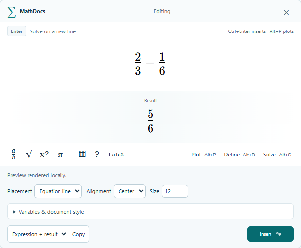
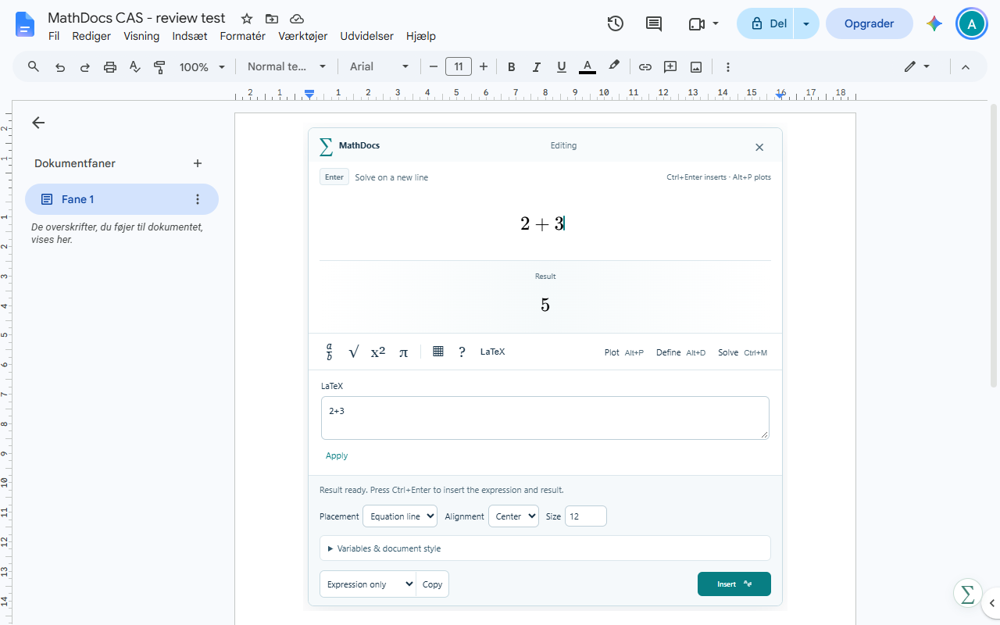

Skriv, mens du tænker.
Skriv en brøk, afslut med mellemrum, og beregn med Enter. Få et eksakt svar i læselig matematik frem for en linje lommeregnertekst.
12 + 13 = 56
Prøv brøker →Skriv ligninger, beregn eksakte svar og undersøg grafer — dér, hvor du skriver dine forklaringer i Google Docs.
Gratis preview. Demoen kræver hverken konto eller betalingskort.

Ja, det er en rigtig brøk.Brug opmærksomheden på løsningen. MathDocs hjælper med at skrive den tydeligt.
Skriv en brøk, afslut med mellemrum, og beregn med Enter. Få et eksakt svar i læselig matematik frem for en linje lommeregnertekst.
Definér en variabel én gang, og brug den i næste beregning. Arbejd med algebra, matricer og velkendt matematisk notation.
Plot en funktion, og justér intervallet. Gå fra et symbolsk udtryk til en graf i et koordinatsystem uden at skifte værktøj.
Prøv at plotte →
Brug Docs-add-on’en fra menuen Udvidelser. Tilføj den valgfrie Chrome-udvidelse, hvis du vil have matematikfeltet direkte på arket.
Det er en fungerende beregner med MathDocs’ matematikmotor. Vælg et eksempel, ret det, og beregn eller plot.
Kun en browserdemo. Den åbner eller gemmer ikke Google-dokumenter. Beregningerne bliver i browseren; du behøver ingen konto.
Start med Docs-add-on’en. Chrome-udvidelsen er en valgfri tilføjelse til at arbejde direkte på dokumentarket.
Den primære editor. Når den er udgivet, installerer du fra Google Workspace Marketplace og åbner den fra dokumentet.
Tilføjer editoren på dokumentarket og tastaturgenveje. Den skal bruge Docs-add-on’en til at gemme formler.
Kontrolleret 2026-11-11: Docs-add-on’en afventer offentlig udgivelse; den senest bekræftede indsendelse er under review. Chrome-udvidelsen er ikke offentligt tilgængelig endnu. Browserdemoen kan bruges nu.
Jeg bygger MathDocs ud fra en enkel frustration: Det bør ikke være mere besværligt at skrive en matematikløsning op end at regne den ud. Jeg vil have mellemregningerne, notationen og svaret til at høre naturligt hjemme i dokumentet.
Det er et uafhængigt projekt, stadig i preview. Jeg arbejder på de steder, der føles besværlige, og lytter til dem, der prøver det. Hvis noget føles forkert — eller du har en god idé — kan du skrive direkte til mig.
Aaccount
Sig hej, eller send feedback ↗Ja. MathDocs er gratis i denne previewperiode, og browserdemoen kræver hverken betaling eller konto. Eventuelle betalte planer i fremtiden bliver tydeligt annonceret, før de gælder.
Docs-add-on’en virker alene fra menuen Udvidelser. Den valgfrie Chrome-udvidelse tilføjer editoren på dokumentarket og genveje. Den erstatter ikke add-on’ens adgang til at gemme i dokumentet.
Ja. Gemte formler er billeder, så andre kan læse og udskrive dokumentet uden MathDocs. Redigering af den matematiske kilde kræver MathDocs. Felterne er ikke native Google-ligningsobjekter; eksport og billedkonvertering kan fjerne kildeoplysningerne.
Den visuelle editor beregner lokalt i en browser-worker. Google Apps Script står for forbindelsen til det aktuelle dokument og for at gemme. Browserdemoen bliver i browseren og får ikke adgang til dine dokumenter. Der er ingen reklame- eller analytics-trackere.
Docs-add-on’en er indsendt til Googles review. Chrome-udvidelsen er endnu ikke offentligt tilgængelig. Review er ikke det samme som godkendelse. Verificerede installationslinks kommer på siden, når produkterne er offentlige.
Skriv til Aaccount via linket nedenfor. Et eksempel på udtrykket, det forventede svar og det, der faktisk skete, er et godt udgangspunkt. Projektet bliver aktivt forbedret.
Start med en brøk. Fortsæt med resten af opgaven.